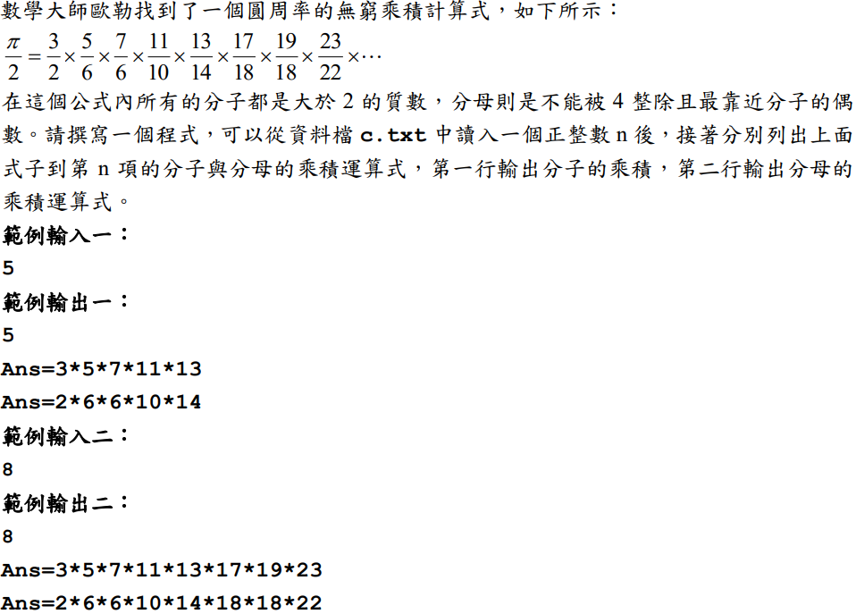

(0)
範例輸入：
8
3*5*7*11*13*17*19*23
範例輸出：
8
3*5*7*11*13*17*19*23
2*6*6*10*14*18*18*22
(1)
範例輸入：
10
3*5*7*11*13*17*19*23*29*31
範例輸出：
10
3*5*7*11*13*17*19*23*29*31
2*6*6*10*14*18*18*22*30*30
(2)
範例輸入：
20
3*5*7*11*13*17*19*23*29*31*37*41*43*47*53*59*61*67*71*73
範例輸出：
20
3*5*7*11*13*17*19*23*29*31*37*41*43*47*53*59*61*67*71*73
2*6*6*10*14*18*18*22*30*30*38*42*42*46*54*58*62*66*70*74
(3)
範例輸入：
15
3*5*7*11*13*17*19*23*29*31*37*41*43*47*53
範例輸出：
15
3*5*7*11*13*17*19*23*29*31*37*41*43*47*53
2*6*6*10*14*18*18*22*30*30*38*42*42*46*54
|
#include <stdio.h>
#include <stdlib.h>
// 判斷是不是質數
int is_prime(int num) {
for (int i = 2; i < num; i++) {
if (num % i == 0) {
return 0;
}
}
return 1;
}
int main(void) {
// 讀入輸入資料
int num, temp = 0;
scanf("%d", &num);
// 建立兩個動態陣列存放兩行的答案
int *ans1 = (int *)malloc(sizeof(int) * num);
int *ans2 = (int *)malloc(sizeof(int) * num);
// 把num數量的質數存到ans1陣列中
int sum = 3;
while (temp != num) {
if (is_prime(sum)) {
ans1[temp++] = sum;
}
sum++;
}
// 找出最靠近分子且不為4的倍數的偶數，存到ans2陣列中
for (int i = 0; i < num; i++) {
if ((ans1[i] - 1) % 4 == 0) {
ans2[i] = ans1[i] + 1;
}
else {
ans2[i] = ans1[i] - 1;
}
}
// 印出答案
printf("%d\n", num);
for (int i = 0; i < num; i++) {
printf("%d", ans1[i]);
if (i != num - 1) {
printf("*");
}
else {
printf("\n");
}
}
for (int i = 0; i < num; i++) {
printf("%d", ans2[i]);
if (i != num - 1) {
printf("*");
}
else {
printf("\n");
}
}
return 0;
}
|